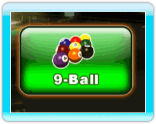
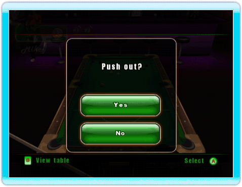

25 |
9-Ball |
 |
 The lowest numbered ball must be hit first on every shot. The first player to legally pocket the 9-ball wins. Lagging To determine who breaks, players each shoot a cue ball to the top rail and back toward the bottom rail. The player whose ball is closest to the bottom rail gets to break.Breaking To perform a legal break, the player must strike the 1-ball first and a ball must be pocketed or the player must drive at least four numbered balls to the rail. If the break is not legal, it is a foul. When a foul occurs on the break, the next player has cue ball in hand anywhere on the table.If a player scratches on a legal break shot, it is a foul. All balls pocketed remain pocketed and the next player has cue ball in hand anywhere on the table. Fouls If a foul is committed, the player loses the turn. Balls pocketed on the foul shot are not re-spotted (except the 9-ball). The next player has ball in hand and can place the cue ball anywhere on the table. The player loses automatically after committing three consecutive fouls. Several fouls on the same shot count as only one.Push Out After the break, a push out can be played. On a push out, the cue ball is not required to contact any ball or rail. All other foul rules still apply. The next player can either shoot from that position or give the shot back to the player who pushed out.If no ball is pocketed, the cue ball or any numbered ball must be driven to a rail after the cue ball hits a ball. If this is not the case, it is a foul.  Shot Order On all shots the player must always hit the lowest numbered ball first. |
 |
 |